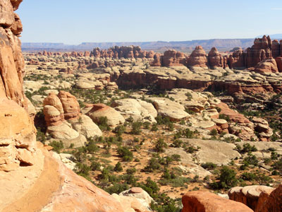
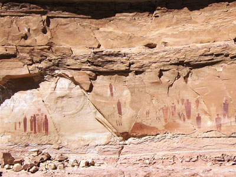
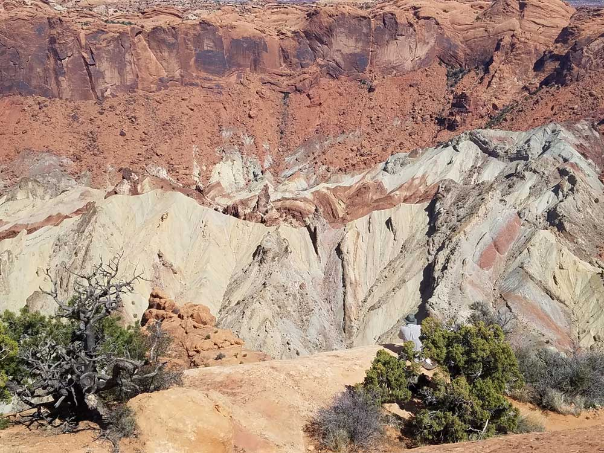

Canyonlands National Park Travel Guide
Park preserves a colorful landscape eroded into numerous canyons, mesas, and buttes by the Colorado River, the Green River, and their respective tributaries
Island in the Sky Visitor Center
Open 8am to 5pm
Needles Visitor Center
Open 8am to 5pm
Accepts America The Beautiful Pass
How to Get There
To Island in the Sky District from Moab (30 mi): Head west on E Center St toward N Main St. Turn right onto US-191 N/N Main St. Continue to follow US-191 N. Turn left onto UT-313 W. Continue onto Grand View Point Rd/Island in the Sky Rd.
To Needles District from Moab (74 mi:) Head southwest on E Center St toward N 400 E. Turn left at the 1st cross street onto Fourth E St. Turn left onto US-191 S. Turn right onto UT-211 W. Turn right. Turn right.
Overview
Canyonlands National Park in southeastern Utah preserves a vast desert of canyons, mesas, buttes, and spires carved by the Colorado and Green rivers, which meet inside the park. At more than 337,000 acres, it is the largest national park in Utah, and much of it is wild and remote. The rivers divide the park into four districts, Island in the Sky, the Needles, the Maze, and the rivers themselves, and each offers a very different experience. The park is known for its huge views, its rock art and arches, and its feeling of open space.
Canyonlands was proposed as a national park by Bates Wilson, a superintendent at Arches National Monument, and was established in 1964. Visitors come for the overlooks at Island in the Sky, where the land drops away 1,000 feet to the White Rim and 2,000 feet to the rivers, for the red-and-white striped spires of the Needles, and for the challenge of the 4WD roads and river trips. The park is close to Moab, which makes it easy to combine with Arches National Park.
Park Sections
The districts are not connected by roads inside the park, and each is reached separately. Island in the Sky is the most accessible and most visited, about 32 miles from Moab (around 40 minutes) via US-191 and Utah Highway 313, and it is the best choice for a short visit. The Needles is farther south, about 75 miles from Moab (around 1.5 hours) via US-191 and Utah Highway 211, and has trails and a campground in a landscape of spires. The Maze is the most remote district, reached by many miles of rough dirt roads and suited only to experienced backcountry travelers with high-clearance 4WD vehicles. Horseshoe Canyon is a detached unit with rock art panels, reached by a dirt road off Highway 24. The rivers themselves are explored by boat.
Sightseeing and Exploring the Park
At Island in the Sky, a paved scenic road runs about 12 miles to Grand View Point, with pull-offs along the way. Highlights include Shafer Canyon Overlook, Buck Canyon Overlook, Green River Overlook, and the Grand View Point Overlook with its panorama of the canyons and the Needles. The short road to Upheaval Dome leads to a puzzling crater that may have been created by a meteorite or salt dome collapse. The 100-mile White Rim Road, a 4WD route that requires a permit for overnight travel, circles the White Rim below Island in the Sky. In the Needles, the paved road ends at Big Spring Canyon Overlook, and several short hikes start from the trailheads.
Hiking
There is a wide range of hiking. At Island in the Sky, Mesa Arch is a half-mile loop to an arch framing the canyon at sunrise, and the Grand View Trail follows the rim for about 2 miles round trip. Aztec Butte and the Whale Rock trails are short scrambles with great views. Strenuous routes such as the Lathrop Trail drop thousands of feet to the White Rim. In the Needles, Cave Spring and Pothole Point are short and easy, while longer trails lead to Chesler Park and Druid Arch, which are day hikes of 11 miles or more. Backpackers need a permit for overnight trips, and there is little water or shade, so carry plenty.
Other Activities
Canyonlands is known for adventure beyond hiking. The White Rim Road is a popular multiday 4WD and mountain bike route, and outfitters in Moab offer guided trips. River trips on the Colorado and Green rivers range from calm-water floats to the whitewater of Cataract Canyon, and permits are required for private trips. Other activities include backpacking, rock climbing, canyoneering, ranger programs, and stargazing, as Canyonlands is an International Dark Sky Park. There are no cave tours or commercial services in the park itself, so most outfitters work from Moab.
Flora and Wildlife
Canyonlands is a desert, and its plants include pinyon pine, Utah juniper, blackbrush, Indian ricegrass, and cottonwoods and willows along the rivers. The cryptobiotic soil crust covers much of the ground and is very fragile, so stay on trails. Wildlife such as desert bighorn sheep, mule deer, coyotes, kit foxes, kangaroo rats, lizards, and many birds live here, but most animals are active at dawn and dusk. Bighorn sheep are sometimes seen along the Shafer Trail, and ravens and golden eagles are common above the canyons. Wildlife viewing is on your own.
Access
Canyonlands is reached by car. From Moab, US-191 leads north to Highway 313 for Island in the Sky and south to Highway 211 for the Needles. Moab is about 235 miles from Salt Lake City (about 4 hours) and about 110 miles from Grand Junction, Colorado (around 1.75 hours). Canyonlands Field airport near Moab has limited service, and the closest large airports are in Grand Junction and Salt Lake City. There is no public transportation, and cell service and gas are scarce, so fill up in Moab or Monticello. The Maze is much more remote and requires planning.
Seasons
Spring and fall are the best seasons, with mild weather and clear views. Summers are very hot, with temperatures often above 100 °F in the canyons, so hike early or choose short walks, and thunderstorms may bring flash floods. Winters are cold and quiet, and snow sometimes closes backcountry roads, but the views from the overlooks are excellent. The roads to the Needles and Island in the Sky are open year-round. Dirt roads in all districts may become impassable after rain, so check conditions before you go.
Camping and Lodging
There is no lodging in the park. Willow Flat Campground at Island in the Sky and Squaw Flat Campground in the Needles are the two developed campgrounds, and they fill quickly in spring and fall, so reserve ahead where possible. Backcountry camping requires a permit. Dead Horse Point State Park, next to Island in the Sky, has a campground. Moab has the most choice, including chain hotels, resorts, B&Bs, and campgrounds, and Monticello, about 50 miles from the Needles entrance, and Green River offer additional motels.
Visitor Centers
The Island in the Sky Visitor Center is near the park entrance and has exhibits, a bookstore, and rangers who can advise on roads and trails. The Needles Visitor Center is just inside the Needles district entrance and offers similar services. The remote Hans Flat Ranger Station serves the Maze, and the Moab Information Center provides information in town. Hours vary by season, so check the National Park Service website before you go.
Districts
| District | What to Expect |
|---|---|
| Island in the Sky | The most accessible, with paved roads and big views: Mesa Arch, Grand View, Upheaval Dome, and the White Rim Road |
| The Needles | Colorful spires, arches, and backcountry trails, about 75 miles from Moab |
| The Maze | The most remote district, for experienced backcountry travelers |
| Horseshoe Canyon | A detached unit with a major rock art panel, the Great Gallery |
This article uses material from the Wikipedia article "Canyonlands National Park", which is released under the Creative Commons Attribution-Share-Alike License 3.0. Additional information comes from the National Park Service Canyonlands National Park website.
Featured Sections

Jeff P from Berkeley, CA, USA, CC BY 2.0, via Wikimedia Commons; Image Size Adjusted
.jpg){kind=link}
Island in the Sky
Region rests on sheer sandstone cliffs over 1,000 feet (304 m) above the surrounding terrain

Jeff P from Berkeley, CA, USA, CC BY 2.0, via Wikimedia Commons; Image Size Adjusted
The Needles
Massive red and white eroded sandstone pillars that extend southwards for many miles, forming a jumbled and hostile landscape
-400.jpg)
Jeff P from Berkeley, CA, USA, CC BY 2.0, via Wikimedia Commons; Image Size Adjusted
The Maze
A vast backcountry wilderness of deep canyons, towering mesas, intricate rock formations, and remote desert landscapes offering one of the most isolated outdoor experiences in the American Southwest.

Jeff P from Berkeley, CA, USA, CC BY 2.0, via Wikimedia Commons; Image Size Adjusted
Horseshoe Canyon
Remote canyon featuring internationally significant prehistoric rock art panels, towering sandstone walls, cottonwood groves, and a rugged desert hiking experience.
Difficulty: Strenuous
